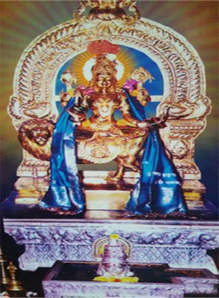

Devi Darshan

Shri Durgraparameshwari Kitre
Shri Durgraparameshwari Temple is a temple located in Kitre Bhatkal, Uttar Kannad district in Karnataka. The primary deity of the temple is Shri Durgraparameshwari. Daily and special poojas are conducted in the temple, Annual festivals are held in the temple with much fanfare.